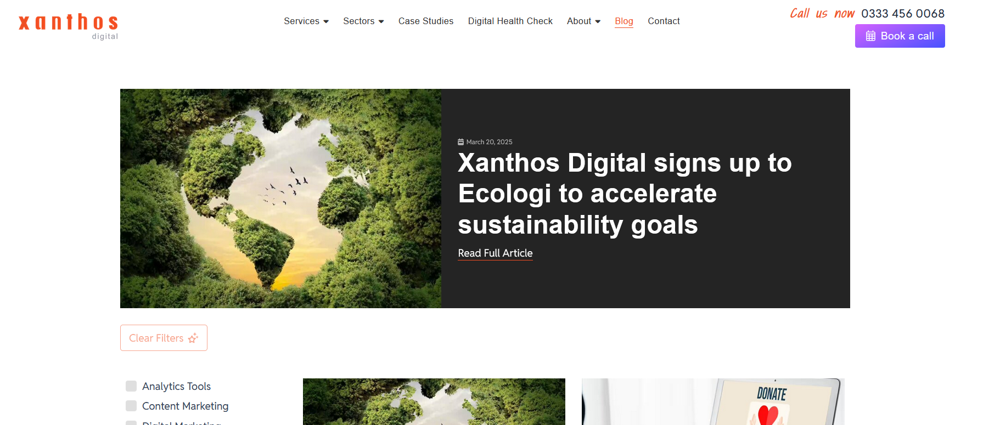
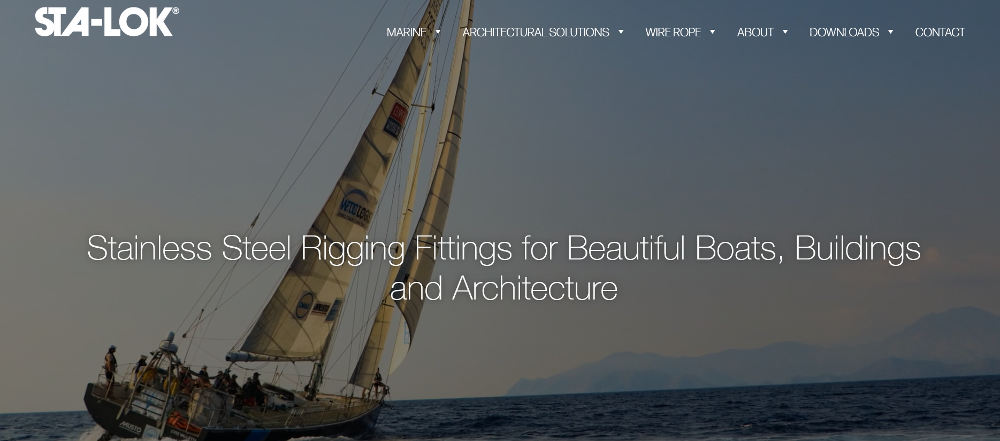
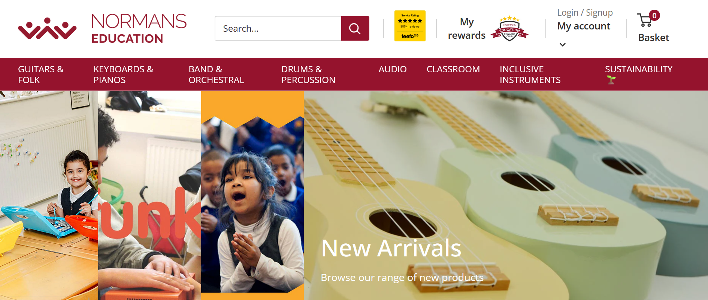
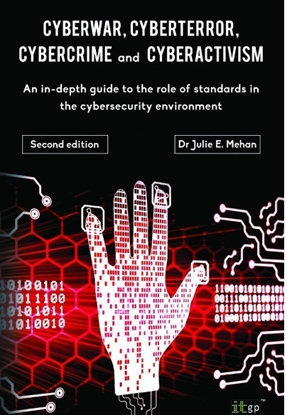

This is a ready-to-print page
Xanthos Digital Marketing Agency
E-Commerce, marketing, branding, and book cover production
Xanthos Digital, established in 2002 and based in Ely, Cambridgeshire,
is a dedicated digital marketing agency
committed to supporting
small and medium-sized businesses (SMBs) in achieving measurable growth
and maximising return on investment.
Their comprehensive range of services includes digital strategy
development, SEO, PPC management, email marketing, web design,
and
E-Commerce solutions. These services are expertly tailored to enhance
clients' online presence and drive sustainable success.
Source images: Xanthos Digital Marketing website
The challenge
Lorem ipsim lorem

My role
During my tenure as a Senior Designer at Xanthos Digital, I was responsible for leading client meetings to understand their unique needs and objectives, translating these into well-defined design briefs. I managed a small team of content and web designers, overseeing the entire design and development process from wireframing and prototyping, using tools like Axure, through to final implementation. Additionally, I gathered post-development feedback to inform sales strategies and ensure continuous improvement.
- Product Designer
- Senior Designer
- UX Designer
- Web Designer
- Book Cover Designer

Source images: STA-LOK Terminals Limited

Source images: Normans Musical Instruments
A significant aspect of my role involved designing book covers for best-selling IT publications, a task that required distilling complex, abstract technological concepts into captivating visual narratives. Furthermore, I developed branding and digital print materials for both B2B and B2C clients, maintaining consistency across all platforms. My expertise extended to creating responsive websites following usability best practices, utilising content management systems such as Kentico and WordPress to deliver user-friendly experiences.

Process and approach
Leading a design team in E-Commerce, branding, and book cover production.
Leading client meetings to capture project goals and managing a team of designers throughout the entire creative process.
E-Commerce. Developing responsive, user-friendly websites using CMS platforms like Kentico and WordPress.
Designing book covers for best-selling IT publications, crafting impactful branding and digital print materials for B2B and B2C clients.

Something
My contribution